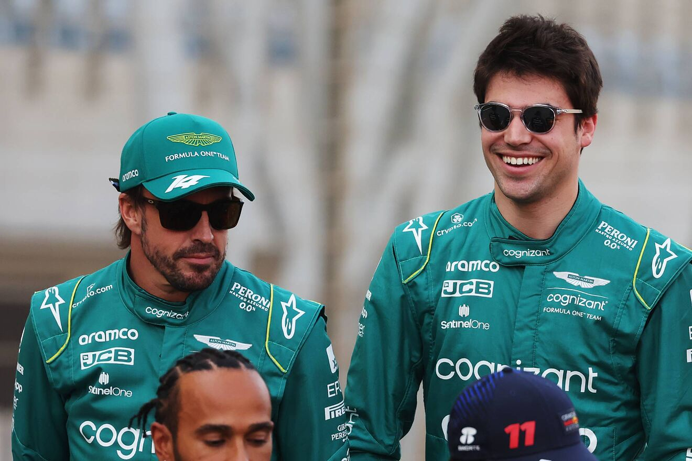
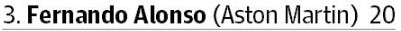
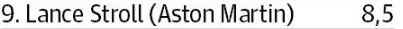

Aston Martin
Pilotos
Fernando Alonso y Lance Stroll
Un cambio de marca del Racing Point F1 Team resultó en el regreso a la Fórmula 1 como Aston Martin en 2021, utilizando motores de Mercedes. La escudería, propiedad de Lawrence Stroll, tiene a Fernando Alonso y Lance Stroll como sus pilotos de carreras en la temporada 2023. La escudería tiene sede en Silverstone.
Salario
 Salario de Fernando Alonso y Lance Strol
El sueldo de Fernando Alonso en la temporada 2023 con Aston Martin asciende hasta los 20 millones de euros, una cifra considerable pero que no es demasiado alta si la comparamos con la de otros pilotos, con menos experiencia que el asturiano y un talento inferior, según los expertos.En cambio Lance Stroll cobra 8.500.000 euros.